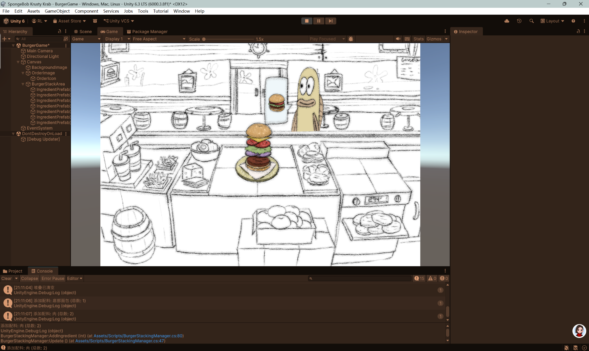
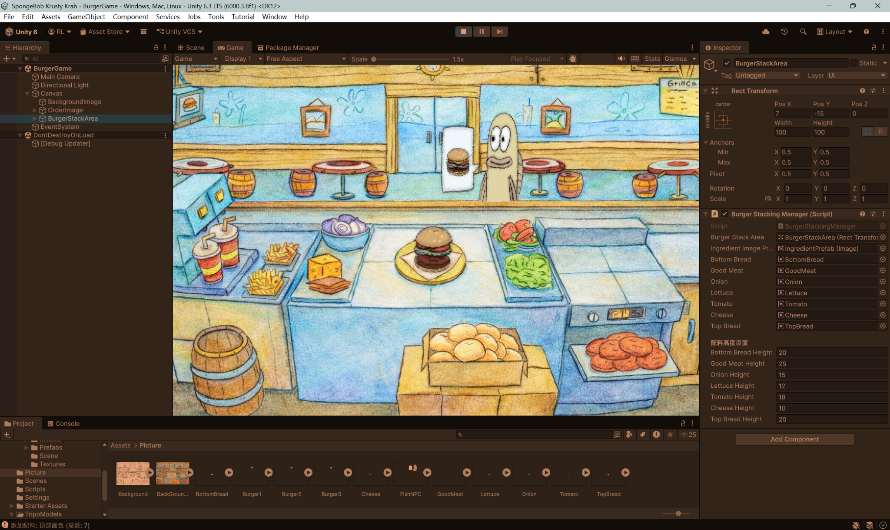
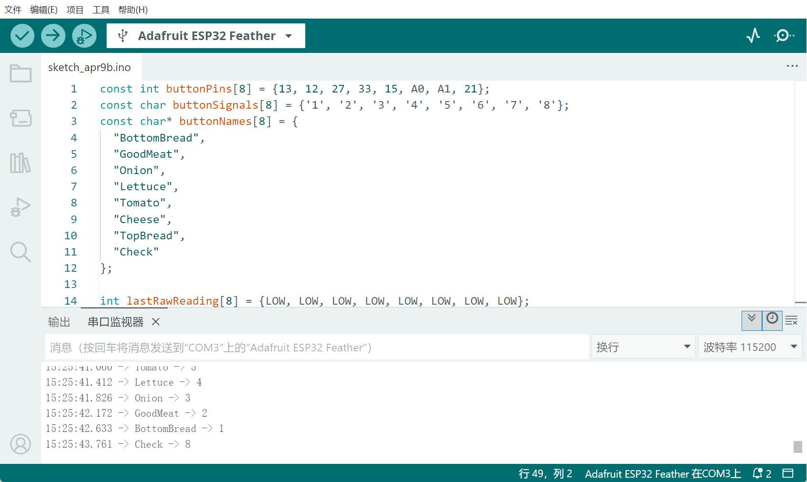
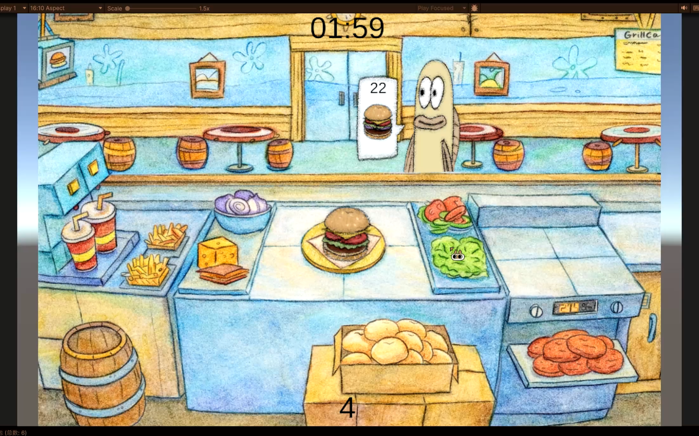

Krusty Krab Burger Game — Unity + Arduino Documentation
Ruby Li, qli16@inside.artcenter.edu
This project is an interactive burger-making game inspired by SpongeBob SquarePants.
Players assemble burgers based on customer orders using physical buttons connected to an ESP32 controller.
Gameplay Videos
Playtesting video showing players using the physical controller.
Screen recording of the final gameplay experience.
1) Idea and Inspiration
This project was inspired by SpongeBob SquarePants, especially the burger-making scenes in the Krusty Krab.
I wanted to recreate the feeling of quickly assembling burgers based on customer orders in a playful and interactive way.
2) Drawing the Background in Procreate

Background environment drawn in Procreate on iPad.
I first designed the kitchen background in Procreate.
I wanted the scene to feel like the Krusty Krab while still keeping my own hand-drawn pencil texture.
3) Initial UI Layout in Unity

Initial black and white UI layout inside Unity.
After importing the assets into Unity, I first built a simple grayscale version of the interface.
At this stage, I focused only on layout, including the background, customer order area, and burger stacking area.
This helped me test the basic game structure before refining the visuals.
4) Colored Interface and Stacking System

Refined colored UI with burger stacking and adjustable ingredient heights.
After the layout was working, I added color and adjusted the interface to better match the visual style of SpongeBob.
A major part of the system was the burger stacking logic. Since different ingredients have different thicknesses, I created adjustable height values in Unity’s Inspector so that each layer could be tuned visually in real time.
This made the burger stack feel more natural and helped prevent the ingredients from floating too far apart.
5) Arduino Controller Debugging

ESP32 button controller debugging and serial communication testing.
I connected multiple physical buttons to an ESP32 board.
Each button was mapped to one burger ingredient, and another button was used to check the final burger.
- Bottom Bread
- Meat
- Onion
- Lettuce
- Tomato
- Cheese
- Top Bread
- Check Burger
6) Gameplay Logic
The gameplay loop is simple:
- A customer appears with a burger order
- The player presses physical buttons to add ingredients
- The burger builds layer by layer in the center of the screen
- The player presses the check button
- The game compares the player’s burger with the target order
If the order is correct, a “Good Job” image is shown.
If the order is wrong, a “Bad Job” image appears.
The result is also printed in the Unity Console for debugging and testing.
The three burger recipes used in the game are:
- Burger 1: Bottom Bread, Meat, Onion, Lettuce, Tomato, Cheese, Top Bread
- Burger 2: Bottom Bread, Meat, Lettuce, Tomato, Top Bread
- Burger 3: Bottom Bread, Meat, Cheese, Top Bread
7) Final Result

Final gameplay interface combining Unity UI, burger logic, and ESP32 control.
The final result is a cooking game that combines digital gameplay with physical interaction.
Compared to keyboard controls, the button interface makes the gameplay feel more like a real action sequence.
Through this project, I explored visual design, UI building, Unity scripting, serial communication, and the relationship between hardware and software in game design.